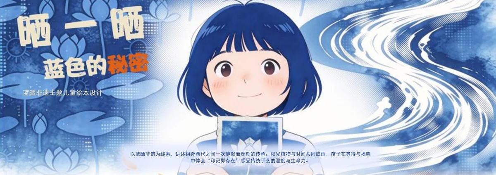
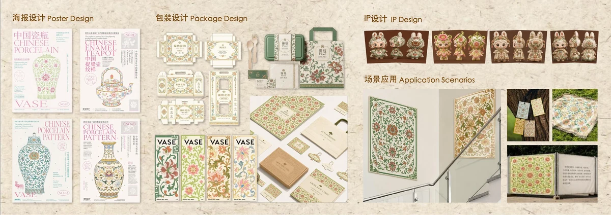
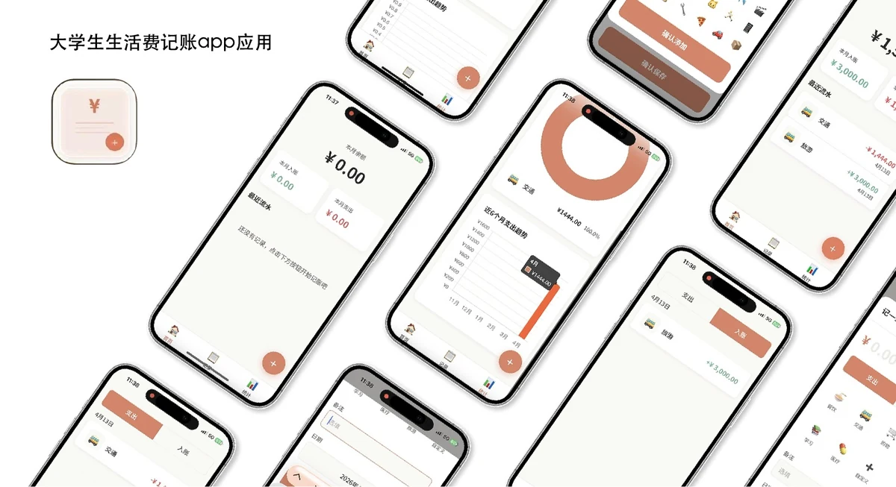
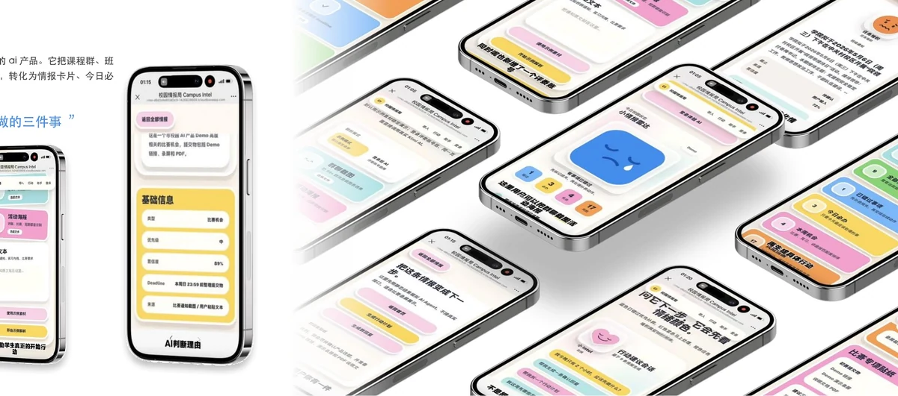
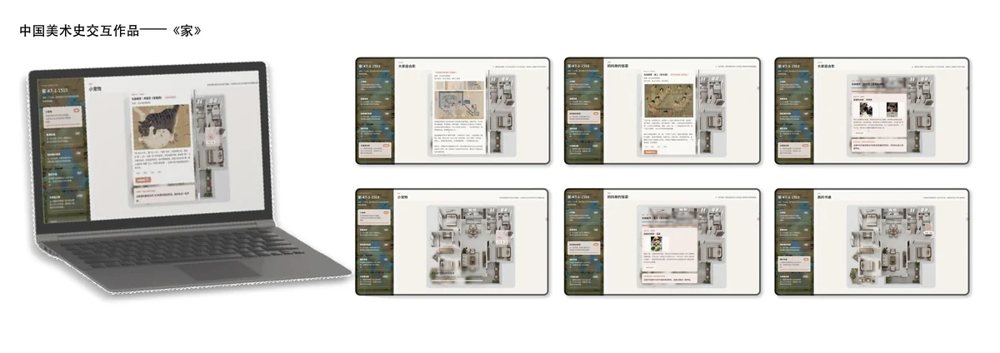
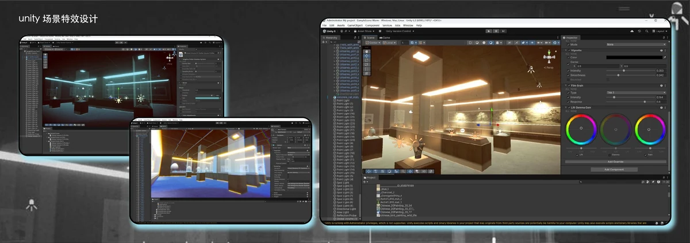
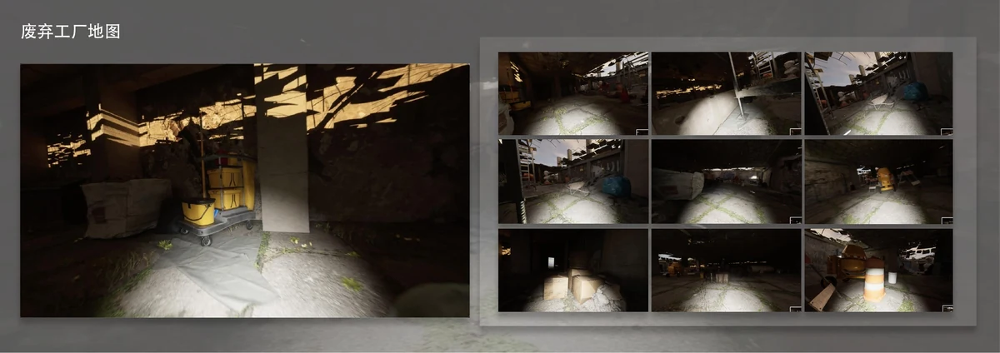
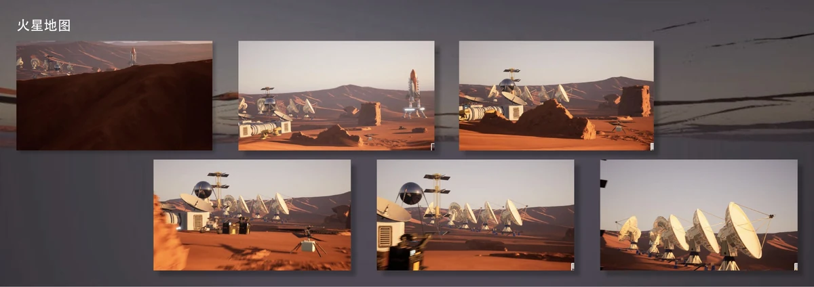
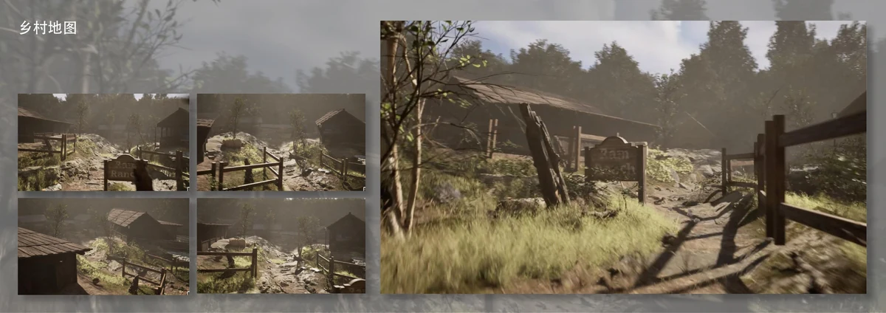
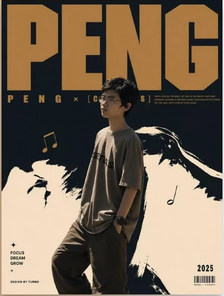

01晒一晒，蓝色的秘密
以蓝晒为线索，讲述一个关于阳光、记忆与传承的成长故事。
DESIGN · EXPERIMENT · CREATE
个人设计作品集 / PORTFOLIO
视觉传达 / AI 产品 / 交互与三维
SCROLL TO EXPLORE01 / SELECTED WORKS
在文化与技术之间寻找连接，
用图像讲故事，也用交互回应日常。

01以蓝晒为线索，讲述一个关于阳光、记忆与传承的成长故事。

02从雍乾御窑的缠枝花纹出发，将东方连续美学转译为当代视觉语言。

03围绕大学生日常场景，探索穿搭建议与生活费管理的产品体验。

04把 99+ 群消息，变成今天该做的三件事。

05将中国美术史内容转化为可浏览的交互作品。

06通过实时场景与视觉特效，探索空间氛围的表达。

07工业遗迹中的光影与空间叙事。

08在陌生星球构建一个想象中的世界。

09用自然材质与植被组织安静的日常空间。

A LITTLE ABOUT ME / 彭嘉峻02 / ABOUT ME
你好，我是彭嘉峻。
从蓝晒绘本到瓷器纹样，从 AI 产品到三维场景，我喜欢在不同媒介之间寻找表达的可能：让传统文化拥有新的视觉语言，也让技术成为更贴近日常的体验。
03 / GET IN TOUCH
新的想法，从一次交流开始。